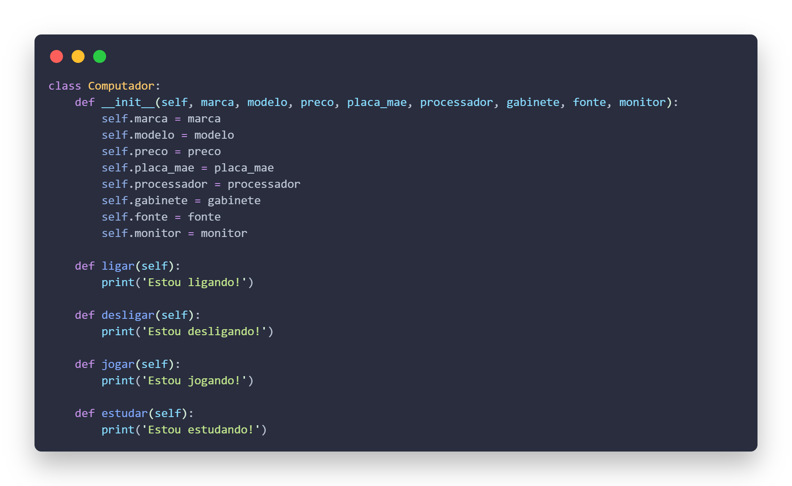
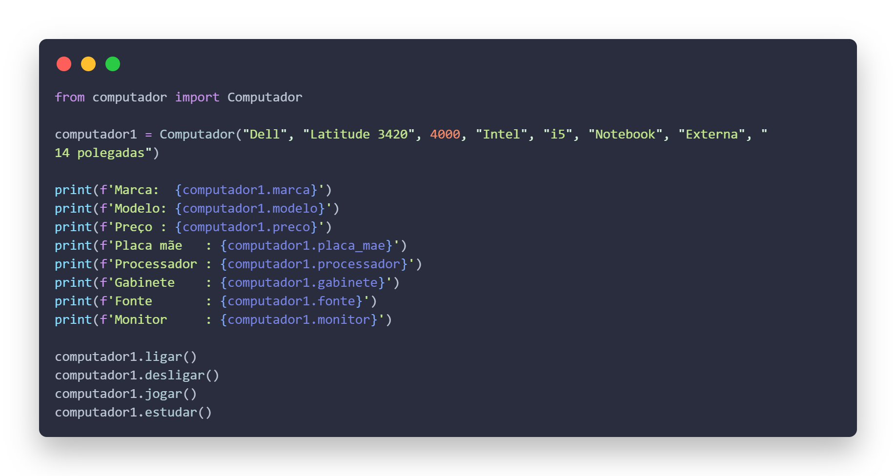
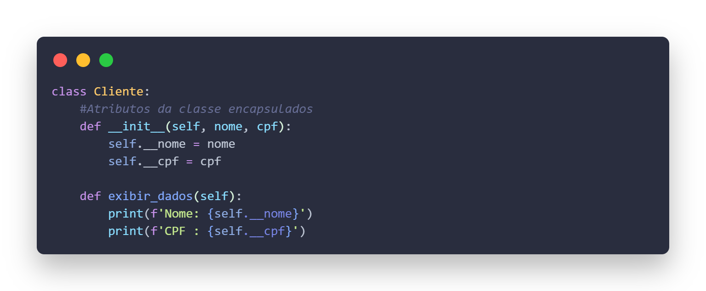
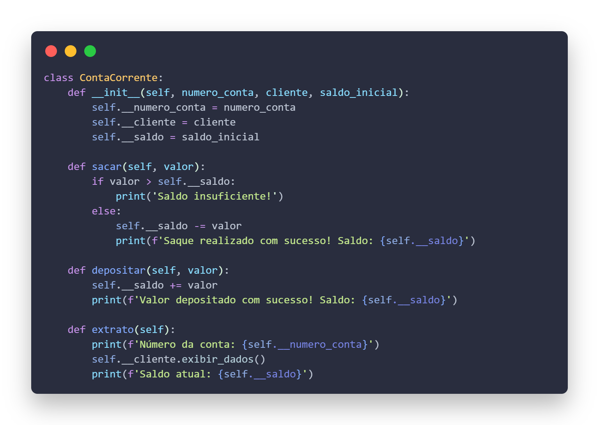
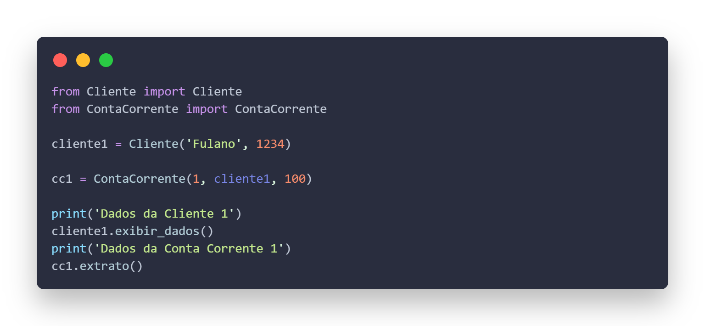
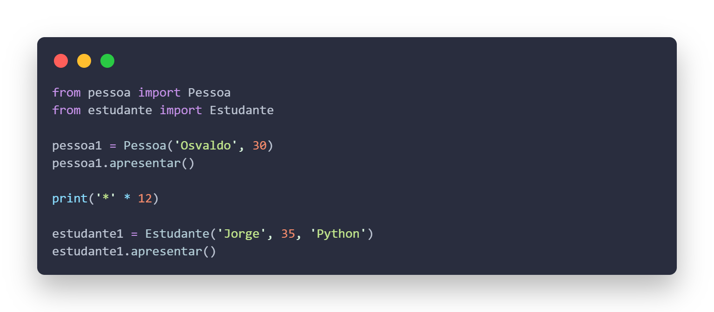
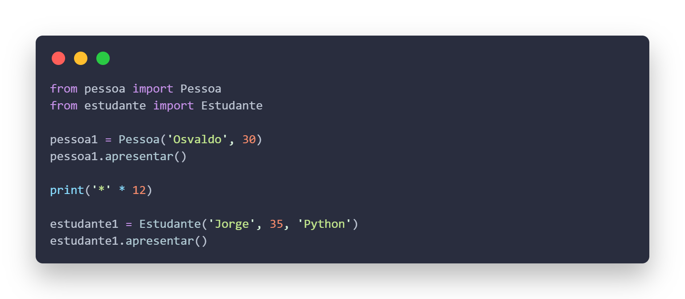

Fundamentos a Programação Orientada a Objetos
Carga horária: 175 horas
Professor: Atila Andreatti Olivi
Dias da Semana: Segunda-Feira e Terça-feira
Módulo Básico - Unidade Curricular
1. Linguagem de programação
1.1. Princípios
1.2. Caraterísticas
1.3. Tipos
1.3.1. Compilada
1.3.2. Interpretada
2. Lógica de programação orientada a objeto
2.1. Definição
2.2. Aplicação
2.3. Algoritmo
2.3.1. Entrada, processamento e saída
2.3.2. Variáveis
2.3.3. Constantes
2.3.4. Operadores lógicos
2.3.5. Operadores aritméticos
2.3.6. Operadores relacionais
2.3.7. Estrutura de decisão
2.3.8. Estrutura de repetição
2.3.9. Vetores
2.3.10. Matrizes
2.4. Técnicas de código limpo (clean code)
3. Programação orientada a objetos
3.1. Definição
3.2. Pacotes
3.3. Classes
3.3.1. Abstrata
3.3.2. Interna
3.3.3. Anônima
3.3.4. Atributos
3.3.5. Métodos
3.3.6. Modificadores de acesso (encapsulamento)
3.4. Objetos
3.5. Interface
3.6. Polimorfismo
3.7. Enumerações
3.8. Relacionamentos de objetos
3.8.1. Herança
3.8.2. Agregação
3.8.3. Composição
4. Ambiente de desenvolvimento
4.1. Instalação e configuração
4.2. Gerenciamento de dependências
4.3. Recursos e interfaces
5. Manipulação de arquivos
5.1. Escrita
5.2. Leitura
6. Controle de versões
6.1. Definição
6.2. Repositório
6.2.1. Inicialização
6.2.2. Remoto
6.2.3. Ramificações (branch)
6.2.4. Versionamento
Atividades Realizadas no Primeiro Semestre
Exemplo 1:
 Exemplo 2:
  Exemplo 3:
 
